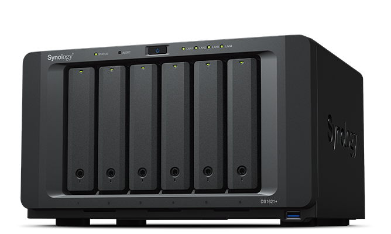
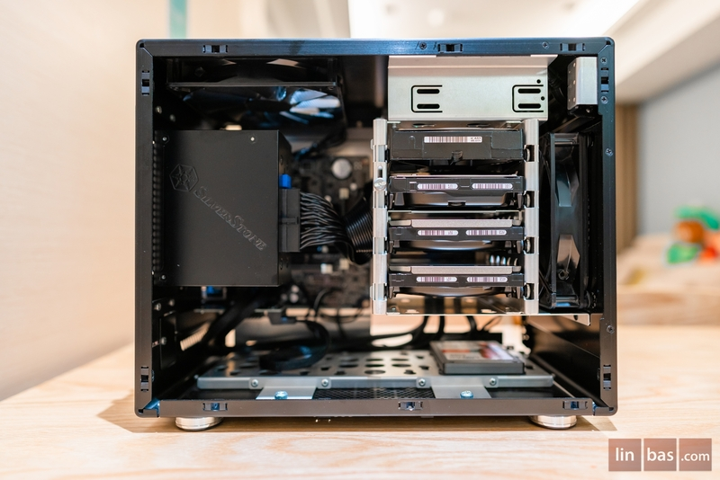
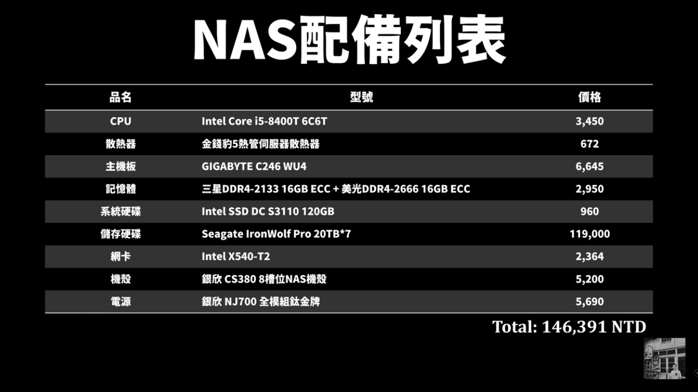
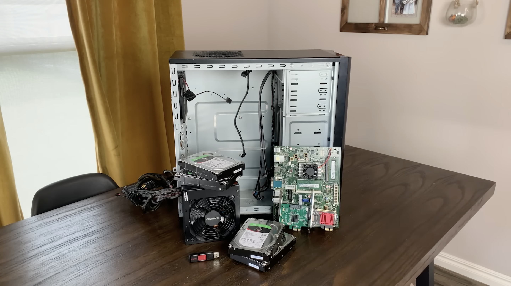

自組NAS&HomeServer
主頁
參考資料
搜集零件
查看全部
我的NAS方案
機殼
CPU
RAM
SSD
HDD
組裝問題
查看全部
CPU風扇
散熱膏
HDD硬碟架
RAM
安裝系統
查看全部
系統選擇
Proxmox
Truenas Scale
Debian
Portainer
網路設定
查看全部
請求路徑圖
Cloudflare Tunnel
Nginx Proxy Manager
Tailscale
軟體調教
查看全部
CIFS
Nextcloud
網站製作分析
查看全部
推薦網站
作業內容分析
參考資料
優缺點比較
自組NAS及市售NAS比較：
市售NAS（上圖）
價格非常昂貴
安裝方便
易用好上手
擁有售後服務
通常體積較小
自組NAS（下圖）
零件選擇多
性價比高
擴充性較佳
安裝麻煩
維護花費高
 
參考資料 1
來源：Huan

參考資料 2
來源：Hardware Haven

最終參考方案
來源：Hardware Haven
機殼：HP PRODESK 600 G3 SFF
CPU：Intel Pentium G4560
SSD：NVMe 256GB
RAM：8GB